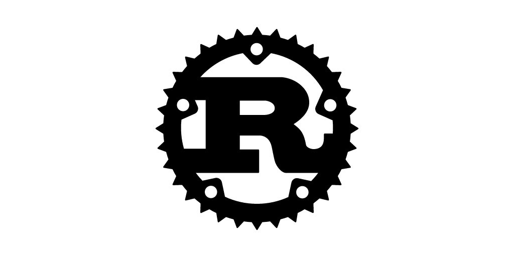
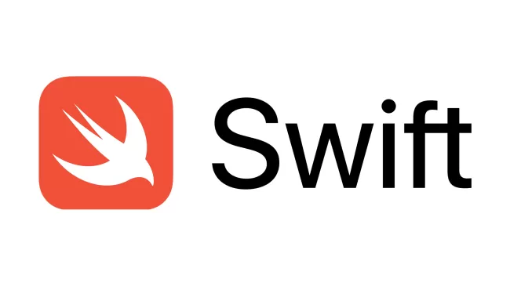
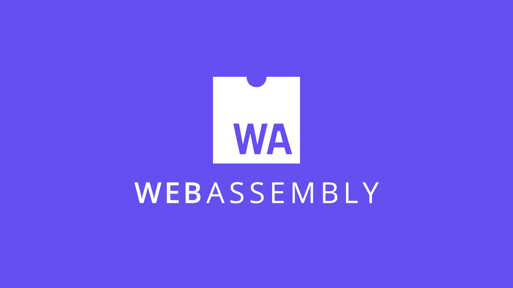

سی شارپ
بدون شک یکی از محبوب ترین و پرکاربرد ترین زبان های برنامه نویسی حال حاضر دنیا سی شارپ نام دارد و بر اساس آخرین تحقیقات صورت گرفته این زبان جزو 5 زبان برنامه نویسی برتر در دنیا می باشد، که همچنین بازار کار بسیار خوبی در ایران دارد. از زبان برنامه نویسی C# می توان برای ساخت برنامه های تحت ویندوز (دسکتاپ)، برنامه های تحت وب،Web service ها، برنامه های موبایل و بازی ها استفاده کرد. برای توسعه برنامه های ویندوز از طریق زبان سی شارپ می توان از پلتفرم های WinForms،WPF و UWP استفاده کرد. حتی با استفاده از زبان سی شارپ و پلتفرم هایی مانند Xamarin و UWP می توان برای اندروید، iOS و ویندوزفون ها برنامه ایجاد کرد. همچنین فریمورک های ASP.NET MVC و ASP.NET Core دو تکنولوژی برای طراحی و ایجاد برنامه های تحت وب مدرن هستند که امروزه در دنیای برنامه نویسی بسیار پرکاربرد و پر آوازه می باشند. بنابراین اگر تسلط خوبی به زبان برنامه نویسی سی شارپ داشته باشید، شما آمادگی کافی برای شروع یادگیری فریمورک قدرتمند ASP.NET Core را نیز خواهید داشت
++ سی

C++ یک نسخه پیشرفته و توسعه یافته از زبان برنامه نویسی C است که توسط Bjarne Stroustrup در سال 1979 توسعه یافت. این زبان در ابتداC with Classes نام داشت و بعدا به C++ تغییر نام داد. Bjarne Stroustrup از C برای ساخت آنچه می خواست استفاده کرد زیرا C یک زبان همه منظوره کارآمد و سریع بود C++ یک زبان برنامه نویسی پیچیده، کارآمد و همه منظوره است. این زبان برنامه نویسی برای برنامه نویسان سطح متوسط مناسب ترین گزینه ممکن است. با این حال، مبتدیانی که می خواهند سفر برنامه نویسی خود را با C++ شروع کنند نیز خیلی زود متوجه خواهند شد که می توانند به سرعت مفاهیم آن را بیاموزند.
گو
اگر در برنامه نویسی پیش زمینه داشته باشید، میدانید که زبان برنامه نویسی گو با C ظاهری کاملاً مشابه دارند. هر دو این زبانهای برنامه نویسی برای برنامهنویسان حرفهای مناسب است. این زبان، حداقل ابزارها را دارد ولی کارایی زیادی را برای شما فراهم میکند. این زبان در باطن، بسیار فراتر از زبان برنامه نویسی C عمل میکند. زبان برنامه نویسی گو، امکانات جدید و کارآمدی مانند قابلیت تفکیک داده (Data Abstraction) و برنامه نویسی شی گرا (Object Oriented) را دارا است. همچنین، به سیستم اتوماتیک مدیریت حافظه (Garbage Collection) مجهز است. همانطور که آگاه هستید، مدیریت حافظه به طور دستی، وقت و انرژی بسیاری را از برنامهنویسان میگیرد. پس، سیستم اتوماتیک مدیریت حافظه گو، یک مزیت در صرفه جویی وقت و هزینه به حساب میآید. علاوه بر این موارد، در زبان برنامه نویسی گو، مفاهیمی مانند جنریک لیستها، سازنده و استثناها وجود ندارد.ویژگی عدم پشتیبانی از وراثت در گو (GO) باعث آسانتر شدن روند ویرایش کدها میشود. به طور مثال، در زبانهای دیگر مانند جاوا یا پایتون، اگر کلاس ABC از کلاس XYZ ارث ببرد، باید در کلاس XYZ تغییراتی ایجاد شود. از همین رو، تمام کلاسهایی که از کلاس XYZ نیز ارث میبرند، باید تغییر کنند؛ بنابراین، عدم پشتیبانی از وراثت باعث فهم بهتر زبان گو میشود
جاوا
جاوا یک زبان برنامهنویسی چندمنظوره و شیگرا است که تا حدودی زیادی به C و ++C شباهت دارد؛ اما استفاده از آن آسانتر است و امکان ساخت برنامههایی قدرتمند با آن وجود دارد. البته تعریفی که شرکت سان مایکروسیستمز در سال 2000 ارائه کرده است، شاید از تعریف فوق گویاتر باشد: جاوا زبان رایانهای ساده، شیگرا، مناسب شبکه، تفسیرشدنی، مستحکم، امن، فارغ از معماری، پرتابل، با عملکرد بالا، چندنخی و دینامیک است.
جاواسکریپت

JavaScript که به اختصار JS نیز نامیده میشود، یکی از محبوبترین زبانهای برنامه نویسی است. جاوا اسکریپت زبانی سطح بالا، داینامیک، شیگرا و تفسیری است که از شیوههای مختلف برنامه نویسی پشتیبانی میکند. از این زبان میتوان برای برنامه نویسی سمت سرور (Server Side)، اپلیکیشنهای موبایل، بازی و اپلیکیشنهای دسکتاپ استفاده کرد. بنابراین میتوان اینگونه برداشت کرد که زبان برنامه نویسی جاوا اسکریپت ، یک زبان همه فن حریف است. اگر با هر یک از این اصطلاحات آشنایی ندارید نگران نباشید، زیرا در ادامه به توضیح هر یک از آنها خواهیم پرداخت. برای اینکه بهتر متوجه چیستی زبان جاوا اسکریپت شوید، در ابتدا باید جواب سوالاتی مانند زبان کامپایلری چیست و چه تفاوتی با زبان مفسری دارد؟، زبان برنامه نویسی سمت سرور و سمت کاربر به چه نوع زبانهایی گفته میشود؟ را بدانید. پس از درک این مفاهیم میتوانید آموزش جاوا اسکریپت را شروع کنید. همانطور که میدانید کامپیوترها تنها به زبان صفر و یک (Binary) صحبت میکنند و زبان دیگری را متوجه نمیشوند. ما در ابتدا برای برقراری ارتباط با ماشینها سعی کردیم به زبان خود آنها، یعنی زبانی که به زبان صفر و یک نزدیکتر است، صحبت کنیم. به این نوع زبانها که به صورت مستقیم با پردازنده در ارتباطاند، در اصطلاح، زبانهای سطح پایین (Low Level) گفته میشود. از جمله این زبانها میتوان به اسمبلی اشاره کرد. اما یادگیری و تسلط به این زبانها برای برنامه نویسان فوق العاده سخت بود. بنابراین متخصصین تصمیم به ساخت زبانهایی گرفتند که به زبان انسانها نزدیکتر باشد. در اصطلاح به این زبانها، زبانهای سطح بالا (High Level) میگویند. زبانهای سطح بالایی مانند JavaScript کار را برای برنامهنویسان سادهتر کردند، زیرا ساختار نوشتاری و منطق آنها بسیار به زبان انسانها نزدیکتر شده است. پس میتوان اینگونه نتیجه گرفت که آموزش جاوا اسکریپت نسبت به سایر زبانهای برنامه نویسی سطح پایین سادهتر است.
کاتلین
از آنجا که زبان برنامه نویسی کاتلین زبانی جدیدتر از جاواست در حال حاضر برای توسعه و برنامه نویسی اپلیکیشن اندروید از زبان کاتلین هم استفاده می شود در این بخش میخواهیم به معرفی زبان برنامه نویسی کاتلین بپردازیم و مزایای زبان برنامه نویسی کاتلین را برشمریم و بهترین زبان برنامه نویسی اندروید را شناسایی کنیم همچنین قصد داریم کاربرد زبان برنامه نویسی کاتلین را به شما نشان دهیم. کاتلین یک زبان برنامه نویسی است که بر روی ماشین مجازی جاوا اجرا میشود. همچنین میتواند به سورس کد جاوا اسکریپت یا کد ماشین کامپایل شود.به گفته ی سایت رسمی کاتلین : کاتلین یک زبان برنامه نویسی مدرن می باشد که باعث خوشحال شدن توسعه دهنده هایش می شود.اولین توسعهٔ آن توسط تیم برنامهنویسان جت برینز (Jet Brains) واقع در سن پترزبورگ روسیه انجام شد. (این نام از روی جزیره کاتلین در نزدیکی سن پترزبورگ میآید.) کاتلین در ژانویهٔ سال ۲۰۱۲ به عنوان زبان ماه انتخاب شد.
ابجکتیو سی
زبان برنامه نویسی Objective-C یک زبان برنامه نویسی شی گرا است که به طور کلی پیام های سبک Smalltalk را به زبان برنامه نویسی C اضافه می کند. این زبان برنامه نویسی اصلی مورد استفاده اپل برای سیستم عامل MacOS و سیستم عامل IOS و روابط برنامه نویسی کاربردی آن (Cocoa و Cocoa Touch) قبل از معرفی Swift بود.
پاسکال
پاسکال از ساختارهای کنترلی با کلمات رزرو شده که شامل if، then، else، while و غیره است استفاده می کند. علاوه بر این، پاسکال از ساختارهای داده و انتزاعاتی مثل رکوردها، اشاره گرها، تعریف انواع، مجموعه ها و شمارش هم پشتیبانی می کند مثل هر زبان شئ گرای دیگری، پاسکال هم ساختارهای مخصوصی برای برنامه و دستورات کنترلی دارد. این ساختارها با کلمه کلیدی “program” شروع می شوند و بعد بلوک اصلی که حاوی دستورات شروع و پایان هستند را خواهیم داشت. انواع داده ها، محدوده ای از مقادیر که یک متغیر می تواند داشته باشد را مشخص می کنند. این انواع قابلیت ذخیره شدن و تعریف کردن مجموعه عملیاتی که می توان روی داده ها انجام داد را دارند.
پرل
زبان برنامه نویسی PERL یک زبان برنامه نویسی با سطح بالا، که ساختارش شبیه به زبان برنامه c دارد. پیشینه زبان برنامه نویسی پرل توسط لری وال در سال 1987 منتشر گردید، معنی اصلی این کلمه به معنای مروارید است. این زبان همه منظوره و دینامیک می باشد. پرل بعضی از خصوصیات زبانهایی چون Sed ،Sh lisp ،Awk را دارا می باشد و در اکثر سیستم عامل ها کاربرد دارد زبان برنامه نویسی پرل برای فایلهای نوشتنی مورد استفاده قرار میگیرد. در ادامه مطلب آموزش یادگیری ماشین لرنینگ با پایتون نیز برای شما مفید خواهد بود. مخترع زبان پرل لری وال متولد سال 1954 آمریکا است وی نویسنده، زبان شناس و همینطور برنامه نویس است بیشترین شهرت وی بخاطرنوشتن زبان پرل می باشد.
پی اچ پی
آیا کنجکاو هستید که بدانید PHP چیست و چه کاربردی دارد؟ امروزه طراحی وب به یکی از پردرآمدترین شغلهای دنیا تبدیل شده است. اگر تصمیم دارید با آموزش php قدم در این دنیای بزرگ بگذارید، ممکن است در روزهای اول ورودتان به این حوزه، مانند بیشتر برنامه نویسان سردرگم شوید. شاید سوالهای مختلفی در ذهن شما شکل گیرد و به طور مداوم در مورد مسیر پیش روی خود دچار شک و تردید شوید. از جمله این که: PHP چیست؟ چرا باید PHP را انتخاب کرد؟ کاربردهای PHP چیست؟ یادگیری PHP را از کجا شروع کنیم؟ اگر قصد دارید با اطمینان و آگاهی کامل زبان برنامه نویسی PHP را انتخاب کنید، تا انتهای مقاله PHP چیست با ما همراه باشید. ما به شما این اطمینان را میدهیم که در پایان، پاسخ پرسشهای خود در مورد زبان PHP را دریافت خواهید کرد.
پایتون

«زبان برنامه نویسی پایتون» (Python Programming Language)، زبانی با یادگیری آسان محسوب میشود و از همین رو بسیاری از برنامهنویسهای تازهکار آن را به عنوان اولین زبان برنامهنویسی خود برمیگزینند، زیرا پایتون به عنوان یک «زبان همهمنظوره» (General-Purpose Language) ساخته و توسعه داده شده و محدود به توسعه نوع خاصی از نرمافزارها نیست. به بیان دیگر، میتوان از آن برای هر کاری، از «تحلیل داده» (Data Analysis) گرفته تا ساخت بازیهای کامپیوتری استفاده کرد. بنابراین، یادگیری پایتون بسیار حائز اهمیت است.
روبی
Ruby یا روبی یکی دیگر از زبانهای برنامه نویسی انعطاف پذیر و شی گرا می باشد .زبان روبی رسماً در روز ۲۴ فوریه ۱۹۹۳ (۵ اسفند ۱۳۷۱) توسط یوکیهیرو ماتسوموتو معرفی شد. او دنبال ساخت زبانی بود که امکانات متعادلی برای برنامه نویسی تابعی و برنامه نویسی دستوری برای برنامه نویس فراهم آورد. ماتسوموتو درباره انگیزهاش برای ساخت روبی میگوید: «در جستجوی زبانی بودم که از پایتون شیءگراتر و از پرل قدرتمندتر باشد. برای همین تصمیم گرفتم خودم آن را بسازم». روبی ویژگیهای نگارشی پرل و شیگرایی اسمال تاک را با هم در خود دارد. زبان روبی در سالهای میانی دهه ۱۹۹۰ توسط یوکیهیرو ماتسوموتو در ژاپن اختراع شد. ویژگیهای گوناگون زبانهای پرل، لیسپ، اسمالتاک و آیفل الهام بخش ماتسوموتو در ساخت روبی بودند. زبان روبی پارادایمهای گوناگون برنامه نویسی از جمله برنامه نویسی تابعی، شیء گرا و بازتابی را پشتیبانی میکند، دارای گزارهها و متغیرهای پویا و مدیریت حافظه خودکار است. نسخه فعلی این زبان Ruby 1.9.1 است که به زبان سی و بصورت زبانی با مفسر تکگذره پیادهسازی شده است. تا سال ۲۰۱۰، گونههای مختلفی از زبان روبی توسعه یافتهاند که از میان آنها میتوان به جیروبی، روبینوس، مکروبی، آیرنروبی و هاتروبی اشاره کرد.
رست
راست (به انگلیسی: Rust) یک زبان برنامهنویسی ترجمهشده، عام منظوره و چند الگویی است که توسط تحقیقات موزیلا توسعه یافتهاست.[۳] این زبان طراحی شدهاست تا یک زبان مطمئن، همسو و عملی باشد[۴][۵] که مدلهای تابعی خالص، امری-رویهای و شی گرا را پشتیبانی میکند. زبان از یک پروژهٔ شخصی توسط توسعهدهندهٔ Graydon Hoare بهوجود آمد، که او کار بر روی آن را در سال ۲۰۰۶ آغاز کرد؛ کارفرمای او موزیلا، در سال ۲۰۰۹ درگیر این پروژه شد[۶] و رسماً آن را برای اولین بار در سال ۲۰۱۰ پرده برداری کرد.[۷] در همان سال، کار از کامپایلرهای اولیه (نوشته شده در OCaml) خود را به کامپایلر خود میزبان نوشتهشده در Rust تغییر داد.[۸] چیزی که بهعنوان rustc شناخته شد، با موفقیت خود را در سال ۲۰۱۱ کامپایل کرد.[۹] کامپایلر خود میزبان از LLVM به عنوان backend استفاده میکند. اولین نسخه از کامپایلر Rust، که آلفا نام گذاری شد در ژانویه ۲۰۱۲ منتشر شد.[۱۰] نسخه فعلی (نسخه ۰٫۸)، در سپتامبر ۲۰۱۳ منتشر شدهاست.[۱۱] Rust بهطور کامل در بازخورد باز و همکاری و کمک از جامعه توسعه یافتهاست. طراحی این زبان از طریق تجربه حاصل از نوشتن موتور چیدمان Servo اصلاح شده و Rust خودش را کامپایل کردهاست.[۱۲] اگر چه توسعه آن با حمایت مالی موزیلا و سامسونگ بودهاست، اما یک پروژهٔ اجتماعی است. بخش بزرگی از تصدیقات نسخهٔ فعلی از اعضای جامعه میباشد.[۱۳]
اس کیو ال

امروزه، دادهها یکی از باارزشترین سرمایههای سازمانها و شرکتها محسوب میشوند. با استفاده از تحلیل دادهها میتوان به دلایل سود و زیان سازمانها پی برد و براساس اطلاعات کسب شده از آنها، راهحلهای مفیدی را به منظور پیشرفت در مسیر تجارت ارائه داد. یکی از ابزارهای مهم و کاربردی به منظور پردازش دادهها، دستکاری آنها و ارائه گزارش بر اساس دادههای ذخیره شده در «پایگاه دادهها» (Databases | DBs)، «زبان پرس و جوی ساختاریافته | اس کیو ال» (Structured Query Language | SQL) است. این مقاله با محوریت پاسخ به SQL چیست ارائه شده است. علاوه بر آن به سایر مباحث مهم پیرامون این سوال که اس کیو ال چیست نیز پرداخته میشود.
سویفت
زبان برنامهنویسی که توسط شرکت اپل برای تولید محصولاتش استفاده میشود، زبان برنامهنویسی swift است. زبان swift که یک زبان چند کامپایلری و چند شیوهای است، از زبانهای برنامهنویسی مختلفی الهام گرفته است. ما در این مقاله قصد داریم تا شما را هرچه بیشتر با این زبان برنامهنویسی آشنا کنیم و ببینیم که این زبان چه ویژگیها و قابلیتهای مختلفی دارد.
تایپ اسکریپت

تایپ اسکریپت (به انگلیسی: TypeScript) یک زبان برنامهنویسی چندسکویی، متن باز و کامپایلری است که توسط شرکت مایکروسافت توسعه داده شده و پشتیبانی میشود. تایپ اسکریپت یکی از زیر مجموعههای زبان جاوا اسکریپت است که به شما کمک میکند تا کدهای خود را به روش سادهتری نوشته و سپس با کامپایل کردن آنها خروجی استاندارد کد جاوا اسکریپت را به دست آورید. امکانات پیشرفتهای که مایکروسافت به تایپ اسکریپت افزوده است، آن را به زبانهایی مانند #C، جاوا و… نزدیک ساخته است. تایپ اسکریپت برای توسعهی پروژههای بزرگ جاوا اسکریپت طراحی شده است و فرآیند توسعه را تا حد زیادی ساده میکند. امروزه تایپ اسکریپت به یکی از محبوبترین زبانهای دنیا تبدیل شده است و روز به روز افراد بیشتری را به خود جذب میکند. اما ممکن است این سوال برای شما نیز پیش آید که چرا باید تایپ اسکریپت را یاد بگیریم و استفاده و یادگیری آن چه مزایایی به همراه دارد؟ در ادامهی این مقاله به این سوالات پاسخ خواهیم داد و زبان تایپ اسکریپت و مزایای آن را به شما معرفی خواهیم کرد، با ما همراه باشید.
ویرژال بیسیک
زبان برنامه نویسی ویژوال بیسیک توسعه یافته زبان برنامه نویسی Basic می باشد که برای نوشتن برنامه های ساده ایجاد شد. ویژوال بیسیک تا نسخه 3 به صورت 16 بیتی بود. از نسخه 5 به بعد فقط ویرایش 32 بیتی آن ارائه شد. اما در نسخه نسخه 4 هم به صورت 16 بیتی و هم به صورت 32 بیتی عرضه شده شد. Visual Basic از نسخه 6 به بعد بر پایه چارچوب (NET.) ارائه شد. در برنامهنویسی تجاری، ویژوال بیسیک جز محبوبترینها است. بنابه آماری که در سال 2008 منتشر شد، 56% از برنامههای تجاری با استفاده از این زبان تولید شدهاند. Visual Basic برای توسعه سریع نرمافزار بر پایه رابط گرافیگی کاربر توسعه داده شد. دسترسی آسان و سریع به پایگاه دادهها با استفاده از DAO ,RDO یا ADO و ایجاد کنترلهای اکتیو ایکس از جمله مواردی هستند که این زبان را برای RAD مناسب کردهاند. برنامهنویسی در ویژوال بیسیک به صورت برنامهنویسی رویداد محور و برنامهنویسی شیءگرا میباشد.
اسمبلی
WebAssembly به گونهای توسعه یافته است که بتوان از آن در کنار جاوااسکریپت استفاده نمود. توسعهی استاندارد جدید wasm توسط کنسرسیوم وب جهانی و با همکاری شرکتهای موزیلا، اپل، گوگل و مایکروسافت در حال انجام میباشد.